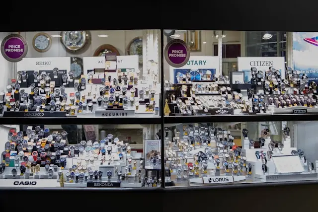

Stackly has made watches in Columbus, Ohio since 1998 — the same city, the same small team ethos, twenty-six years later.

Stackly started in 1998 as a two-person operation repairing and restoring vintage watches out of a rented room in Columbus, Ohio. Within three years, the same small team began building original pieces of their own — designed to be worn daily, not displayed.
That founding principle hasn't changed. We're still headquartered in Columbus, we still hand-finish every case ourselves, and we still believe a watch should be built to outlast the person who bought it — and be passed on from there.
Four people your watch actually passes through before it ships — no outsourced assembly line, no anonymous factory floor.
Four things we don't compromise on, regardless of how popular a release gets.
Every movement is regulated by hand, over days, not run through a machine and shipped.
Two seconds a day, tested across five positions, on every single watch we make.
We tell you what's actually in your watch — the steel grade, the movement origin, all of it.
A 5-year warranty and a service program built for decades of wear, not just the return window.
We open the workshop floor to visitors by appointment — see a movement regulated in person before you decide.
We're a small team that grows slowly, on purpose. If watchmaking, case finishing, or quality control interests you, we'd like to hear from you.
View Openings